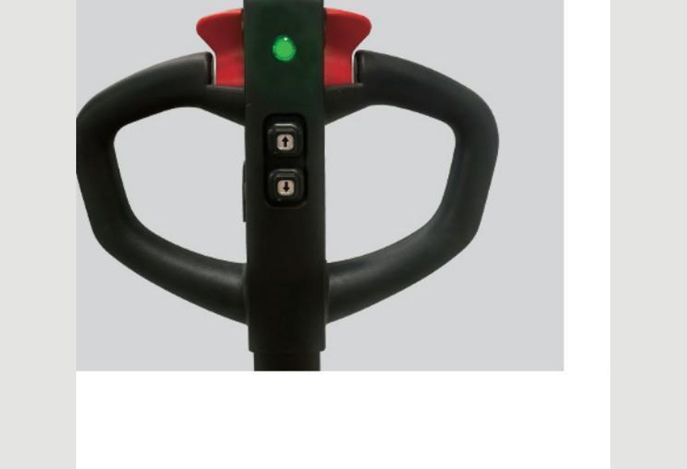
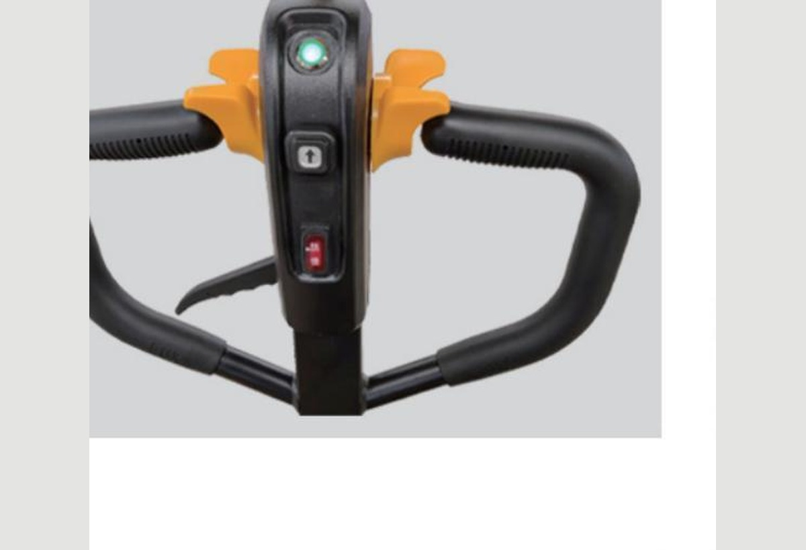
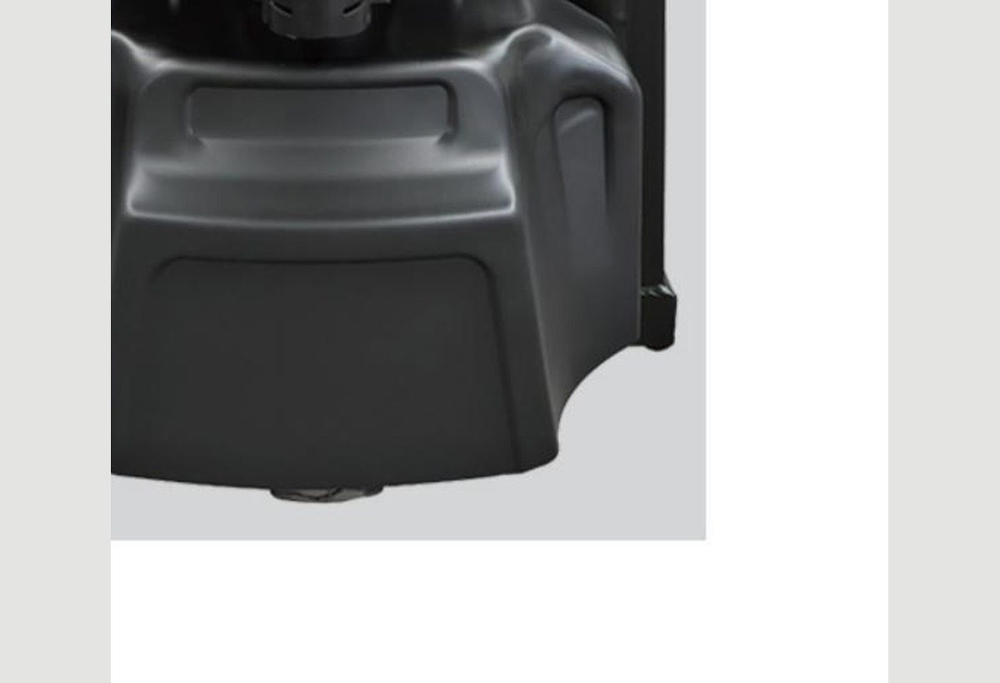
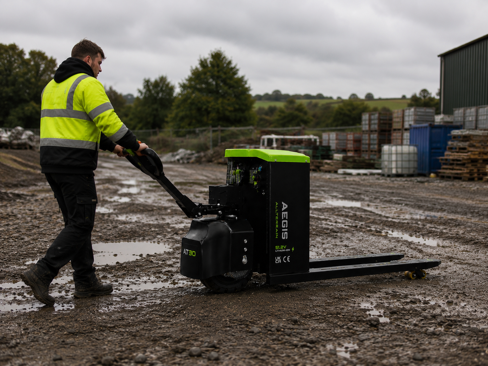

Tiller controlsThrottle, reverse switch and operator hand position.
Operator safety
Controlled pedestrian handling for heavy outdoor loads, with layered systems designed to support braking, operator clearance and safer low-speed movement.
Request safety guidanceSafety closeups
Key tiller, braking and chassis details behind safer pedestrian handling.




Controlled pedestrian handling
Operator contact, loss of grip and tight yard movement are handled through layered safety systems: emergency reverse, dead-man braking, protected chassis and controlled travel speed.
If the tiller head contacts the operator while reversing, the spring-loaded switch cuts reverse drive and commands the truck away from the operator.
If the operator releases the handle, loses grip, trips, or moves the tiller into the vertical safety zone, the truck brakes rather than continuing uncontrolled.
Physical protection
The AT30 safety package is not one single feature. It is a layered system combining operator controls, chassis protection, controlled speed and braking behaviour.
Steel chassis protection helps shield the drive wheel and lower mechanical components from exposed contact.
Pedestrian-speed operation, approximately 4-4.5km/h depending on load and configuration, supports better reaction time under load.
The butterfly throttle can be released quickly when the working environment changes.
Safe operation still depends on site training, route planning, load awareness and correct workplace supervision.
For site managers
The AT30 does not remove the need for responsible site procedures, risk assessment and correct load handling. It gives teams a purpose-built machine with systems that help operators stay in control when moving heavy pallets in demanding environments.
Speak with Trade Machinery Direct about the AT30 safety features, operating environment, site procedures and the right configuration for your team.